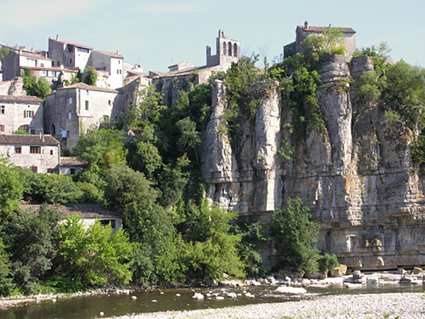

Perché sur une falaise dominant la rivière Ardèche, Balazuc est l'un des villages les plus photogéniques du département. Classé parmi Les Plus Beaux Villages de France et labellisé « Village de Caractère », il séduit par ses ruelles pavées, ses maisons de pierre accrochées à la roche et son ambiance hors du temps. Depuis Les Cabritas, à Flaviac, comptez environ 45 minutes de route pour rejoindre ce site.

Un village habité depuis plus de 50 000 ans
Le site de Balazuc est occupé depuis des temps très anciens : dans les grottes des Barasses, sur les hauteurs des falaises, des hommes de Néandertal ont laissé des traces de leur passage au paléolithique. Le village tel qu'on le connaît aujourd'hui s'est surtout développé aux XIe, XIIe et XIIIe siècles, lorsque Balazuc était le fief de puissants seigneurs vivarois. L'influence sarrasine, encore visible dans certains détails architecturaux, ajoute une touche singulière à ce patrimoine déjà remarquable.
Que voir à Balazuc
La visite se fait naturellement à pied, en flânant dans les ruelles étroites, sous les passages voûtés et le long des escaliers taillés dans la roche. Ne manquez pas la tour carrée du XIIe siècle, vestige d'un ancien château fort, ni la chapelle Saint-Nicolas-de-Lancier, considérée comme le plus ancien édifice du village. En contrebas, la rivière Ardèche invite à la baignade ou à une pause fraîcheur au bord de l'eau, avec une vue imprenable sur le village accroché à sa falaise.
Bon à savoir avant votre visite
Balazuc se visite avant tout à pied : les ruelles pavées et les nombreux escaliers ne sont pas adaptés aux poussettes ni aux personnes à mobilité réduite. Le village est petit et se parcourt tranquillement en une heure ou deux, ce qui en fait une excursion facile à combiner avec une baignade en rivière ou la visite d'un autre village voisin comme Vogüé ou Ruoms. Quelques commerces, cafés et une petite galerie d'art ponctuent la balade. Le stationnement se fait sur un parking en entrée de village, d'où l'on rejoint le cœur historique à pied en quelques minutes. En saison, une petite guinguette au bord de la rivière permet de prolonger la visite autour d'un verre, les pieds dans l'eau, avec vue sur les falaises et les maisons du village accrochées à la roche.
Infos pratiques depuis Les Cabritas
- Distance depuis Flaviac : environ 45 min de route
- Meilleure période : toute l'année, particulièrement agréable au printemps et à l'automne
- Idéal pour : balade, patrimoine, photographie, amateurs de vieilles pierres
Envie de découvrir Balazuc depuis votre gîte en Ardèche ?
Les Cabritas vous accueillent à Flaviac, au cœur de l'Ardèche, pour un séjour confortable avec piscine privée, à deux pas des plus beaux sites de la région.
Vérifier les disponibilités